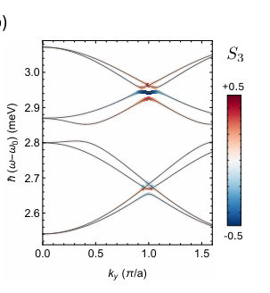

← Index · ← Previous · Next →
Authors: Dayal Singh Kalra, Maissam Barkeshli
Type: theory · Category: disordered systems and neural networks · PDF: https://arxiv.org/pdf/2605.21486v1
Analysis basis: full PDF text, analyzed in chunks
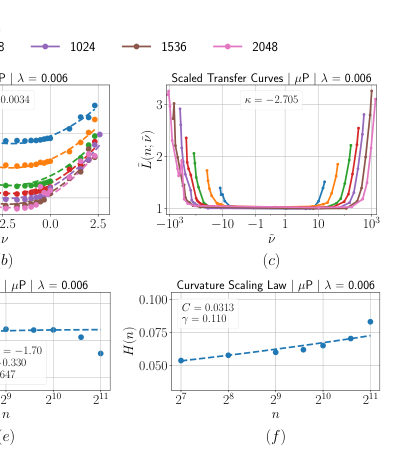
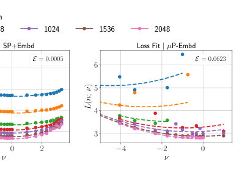
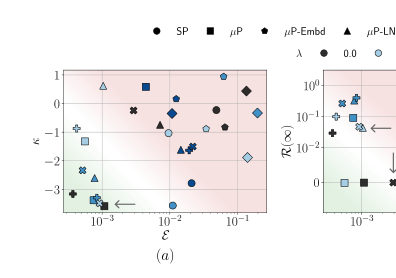
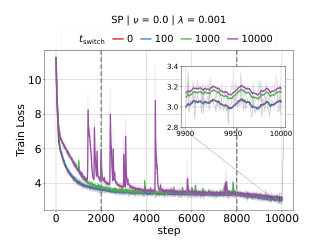
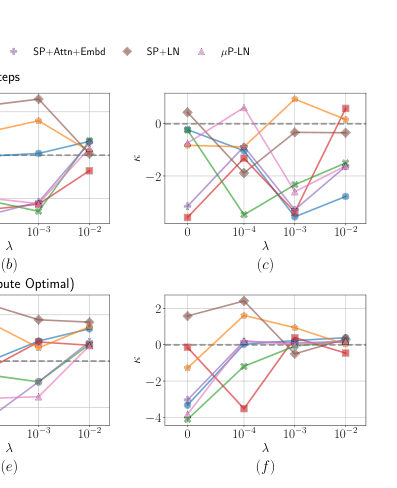
Summary. This paper provides a formal framework to quantify how well hyperparameters can be transferred from small to large neural networks. It discovers that the success of the popular muP parameterization is largely due to its ability to stabilize the training of the embedding layer. The work also explores how weight decay affects the predictability and robustness of scaling laws.
Why it may be interesting. not directly relevant
Main problem. The paper investigates the mechanisms behind hyperparameter transferability in neural networks, specifically comparing the effectiveness of Maximal Update Parameterization (muP) versus Standard Parameterization (SP) when scaling model width.
Main result. The authors identify that the primary driver of muP's superior learning rate transfer is the maximization of the embedding layer learning rate, which prevents training instabilities found in SP.
Method. The study uses a quantitative framework with three new metrics (scaling law fit quality, transfer robustness, and asymptotic loss penalty) and a series of 16 ablation studies on Transformer and CNN architectures.
Model / system. The study focuses on decoder-only Transformers and CNNs, analyzing scaling behavior as model width (n) increases, using the AdamW optimizer and the FineWeb-Edu dataset.
Key observables. Scaling law fit error (E), transfer robustness exponent (kappa), and asymptotic loss penalty (R(infinity)).
Important parameters / regimes. Model width (n), learning rate (eta), weight decay (lambda), and the abcd parameterization exponents controlling forward pass, initialization, and learning rate scaling.
Assumptions / limitations. Assumptions include a width-independent training horizon, the 'Full Alignment Assumption' for simplifying scaling exponents, and specific scaling for input/loss derivatives.
Figures summary. Figure 1 shows the calculation of transfer metrics; Figure 2 demonstrates how adjusting the embedding layer learning rate in SP mimics muP; Figure 3 shows transfer metrics across parameterizations; Figure 4 illustrates loss gaps and stability; Figure 5 shows the impact of weight decay in fixed-step and compute-optimal regimes.
Paper structure. The paper introduces a quantification framework for hyperparameter transfer, presents an ablation study isolating the embedding layer's role, provides a mathematical derivation of stability conditions for SGD and Adam, and concludes with an analysis of weight decay and compute-optimal scaling.
Hyperparameter transfer allows extrapolating optimal optimization hyperparameters from small to large scales, making it critical for training large language models (LLMs). This is done either by fitting a scaling law to the hyperparameters or by a judicious choice of parameterization, such as Maximal Update ($μ$P), that renders optimal hyperparameters approximately scale invariant. In this paper, we first develop a framework to quantify hyperparameter transfer through three metrics: (1) the quality of the scaling law fit, (2) the robustness to extrapolation errors, and (3) the asymptotic loss penalty due to choice of parameterization. Next, we investigate through a comprehensive series of ablations why $μ$P appears to offer high-quality learning rate transfer relative to standard parameterization (SP), as existing theory is inadequate. We find that the overwhelming benefit of $μ$P relative to SP when training with AdamW arises simply from maximizing the learning rate of the embedding layer. In SP, the embedding layer learning rate acts as a bottleneck that induces training instabilities; increasing it by a factor of width to match $μ$P dramatically smooths out training while improving hyperparameter transfer. We also find that weight decay improves the scaling law fits, while, in the fixed token-per-parameter setting, it hurts the robustness of the extrapolation.
Authors: Yaprak Önder, Abbas Ali Saberi, Roderich Moessner
Type: theory · Category: disordered systems and neural networks · PDF: https://arxiv.org/pdf/2605.21254v1
Analysis basis: full PDF text, analyzed in chunks
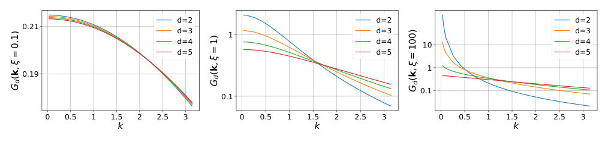
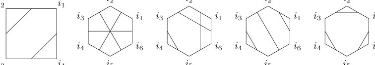
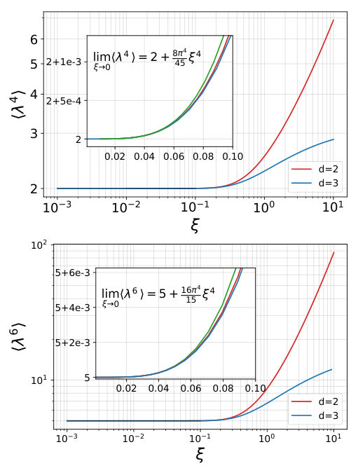
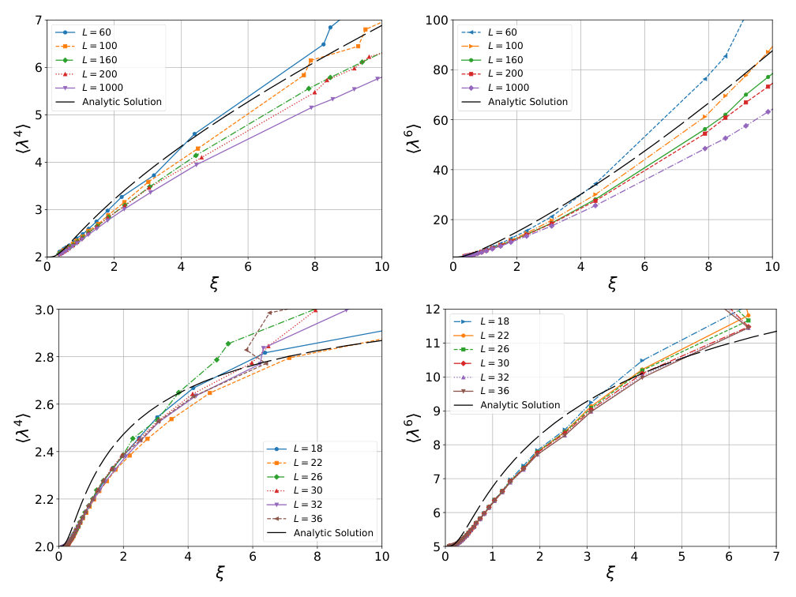
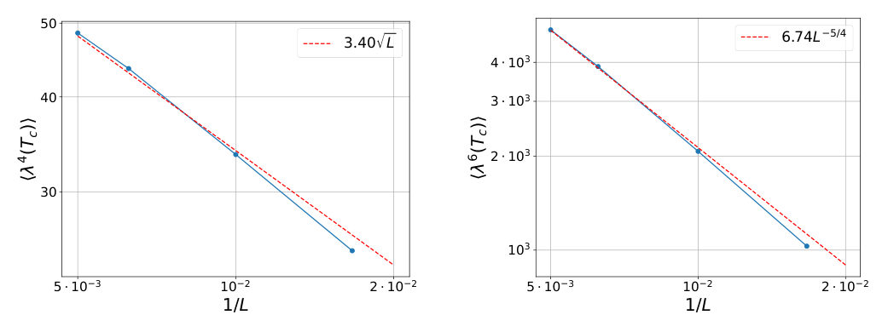
Summary. This paper introduces a method to bridge statistical mechanics and random matrix theory by mapping lattice configurations to correlated matrix ensembles. It demonstrates that the eigenvalue spectrum of these matrices can quantitatively capture phase transitions and the evolution of spatial correlations.
Why it may be interesting. not directly relevant
Main problem. Developing a random matrix framework to study statistical-mechanical lattice systems through spectral observables and determining if eigenvalue spectra can serve as probes for collective behavior and criticality.
Main result. The authors establish that the eigenvalue spectrum evolves from a Wigner semicircle law at high temperatures to model-dependent critical forms that reflect the underlying spatial correlation structure.
Method. The framework maps Boltzmann-weighted configurations to matrix ensembles using Wick-contraction expansions for moments and the Vector Dyson Equation (VDE) for the bulk density.
Model / system. The study focuses on d-dimensional hypercubic lattices, specifically the 2D ferromagnetic Ising model and the 3D Edwards-Anderson spin glass.
Key observables. Eigenvalue spectral distribution (bulk density), spectral moments, spectral edge, and the variance profile in momentum space.
Important parameters / regimes. Temperature (beta), correlation length (xi), system size (L), and the anomalous dimension (eta).
Assumptions / limitations. Assumes translational invariance, periodic boundary conditions, and uses a Gaussian/Wick approximation for off-critical regimes.
Figures summary. Figures show the variance profile V(k) across dimensions, the scaling of the fourth and sixth moments with correlation length, and the accuracy of the analytic spectral edge compared to Monte Carlo data.
Paper structure. The paper introduces the matrix construction, derives the momentum-space variance profile, applies analytical techniques (Wick expansion and VDE) to specific models (Ising and EA spin glass), and benchmarks results against Monte Carlo simulations.
We introduce a random matrix framework for studying statistical-mechanical lattice systems through spectral observables. Equilibrium configurations sampled from a Boltzmann measure are mapped to matrix ensembles whose covariance structure is inherited from the spatial correlations of the underlying model. This construction maps real-space correlation functions to a momentum-space variance profile, providing a direct bridge between statistical-mechanical correlations and correlated random matrix ensembles. We derive this variance profile in finite-correlation-length and critical regimes, and compute spectral moments within a Wick-contraction expansion. A complementary self-consistent description of the bulk density is developed using the resolvent formalism. These analytical methods are benchmarked against Monte Carlo data for the two-dimensional Ising model and three-dimensional Edwards--Anderson spin glasses. In both cases, the spectra evolve from the semicircle law at high temperature to model-dependent critical forms reflecting the structure of correlations. The framework, therefore, provides a quantitative spectral route to probing collective behavior in ordered and disordered statistical systems, while also defining a class of physically motivated correlated random matrix ensembles.
Authors: Justin B. Hart, Awwab A. Azam, Thomas Li, Yunxuan Li, Ye Bi, Haining Pan, Jiabin Yu
Type: theory · Category: numerical methods · PDF: https://arxiv.org/pdf/2605.20326v1
Analysis basis: full PDF text, analyzed in chunks
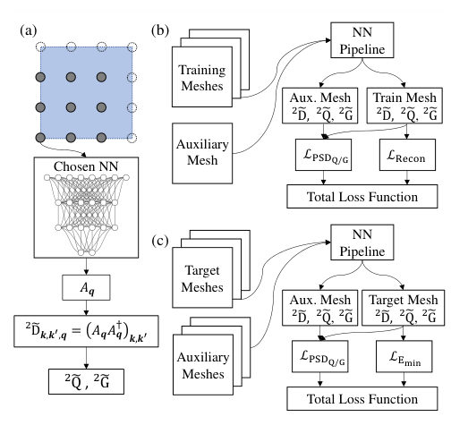
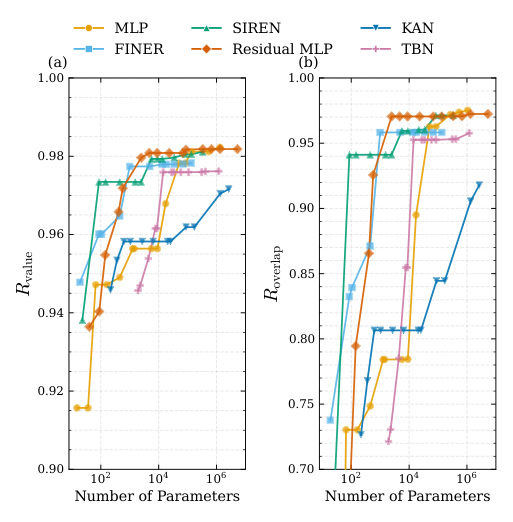
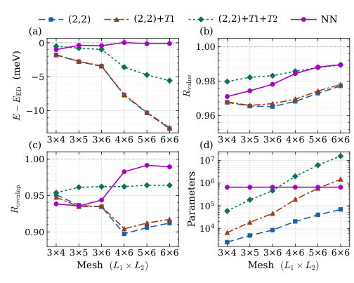
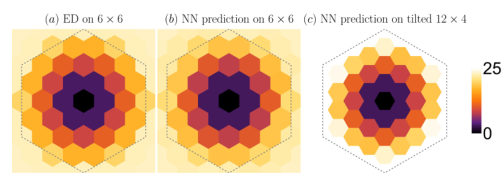
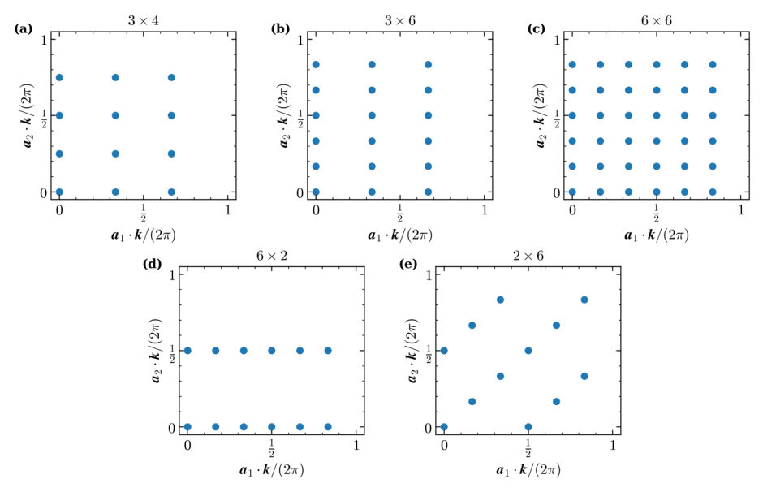
Summary. The authors present a neural network framework designed to predict reduced density matrices by embedding physical N-representability constraints directly into the network. This approach allows for efficient interpolation of many-body properties across different momentum meshes and provides a highly parameter-efficient alternative to traditional semidefinite programming for studying fractional Chern insulators.
Why it may be interesting. not directly relevant
Main problem. Developing an efficient way to predict two-particle reduced density matrices (2-RDMs) and many-body energies for large-scale strongly correlated systems without the exponential cost of Exact Diagonalization.
Main result. The proposed representability-aware neural network, specifically a residual MLP, achieves high accuracy in predicting 2-RDMs and ground-state energies with significantly fewer parameters than traditional semidefinite programming methods.
Method. A neural network framework that incorporates N-representability conditions (Hermiticity, antisymmetry, and PSD constraints) into its architecture and loss function, utilizing both interpolation-based training and variational optimization.
Model / system. A one-band projected many-body model of twisted bilayer MoTe2 (tMoTe2) at a 3.89 degree twist angle and 2/3 hole filling, featuring double-gate screened Coulomb interactions.
Key observables. Two-particle reduced density matrices (2-RDMs), many-body ground-state energy, many-body quantum metric, and static structure factor S(q).
Important parameters / regimes. Twist angle of 3.89 degrees, hole filling of 2/3, gate distance of 20 nm, and various momentum mesh sizes.
Assumptions / limitations. The implementation only enforces a subset of N-representability conditions because the full set is NP-complete.
Figures summary. Figure 1 shows the NN pipeline and loss function schematics; Figure 9 compares architecture performance via R-value and overlap; Figure 14 illustrates the scaling of accuracy against parameter count.
Paper structure. The paper introduces the representability-aware NN framework, evaluates various architectures (MLP, KAN, SIREN, etc.) using the Richardson model, applies the method to the tMoTe2 fractional Chern insulator, compares performance against BPSDP, and concludes with scaling and generalization results.
We develop a representability-aware and interpolable neural network (NN) framework for predicting two-particle reduced density matrices (2-RDMs). The NN incorporates a subset of representability conditions through its architecture and loss function, and can operate on different momentum meshes, enabling evaluating the representability conditions across multiple meshes, which we call interpolated representability condition. The framework can be used either to predict 2-RDMs on large momentum meshes by interpolating exact results from small meshes, or as a variational 2-RDM ansatz optimized by energy minimization on arbitrary meshes. We apply this approach to the fractional Chern insulator in the one-band projected model of twisted bilayer MoTe$_2$ at twist angle $3.89^\circ$ and hole filling $2/3$. Trained on exact-diagonalization (ED) 2-RDMs from meshes with $12$ or $18$ momentum points using six different NN architectures, the best NN is the residual multilayer perceptron, which predicts the $6\times6$ 2-RDM with $97.07\%-98.18\%$ accuracy relative to the ED 2-RDM but predicts an energy $77.353$ meV above ED ground-state energy. We then variationally optimize the NN on several meshes including $6\times6$, predicting a $6\times 6$ energy of just $0.104$ meV below ED while maintaining $98.94\%-98.96\%$ accuracy. Compared with the conventional boundary-point semidefinite programming, which gives an energy $5.560$ meV below ED with $96.40\%-98.94\%$ accuracy, the NN achieves a more accurate energy and similar accuracy while using only less than 1/20 as many parameters. Eventually, we add a symmetric mesh of $48$ momentum points to the variational optimization of the NN, and provide a prediction of the many-body ground-state energy and the many-body quantum metric on that mesh.
Authors: Ruslan Mushkaev, Francesco Petocchi, Philipp Werner
Type: theory · Category: strongly correlated electrons · PDF: https://arxiv.org/pdf/2605.21386v1
Analysis basis: full PDF text, analyzed in chunks
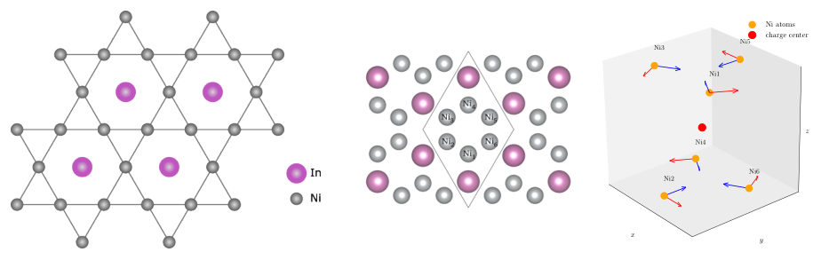
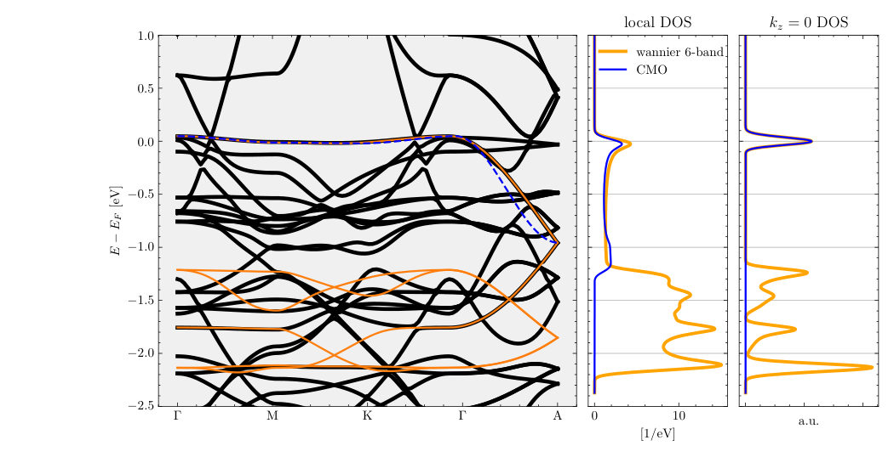
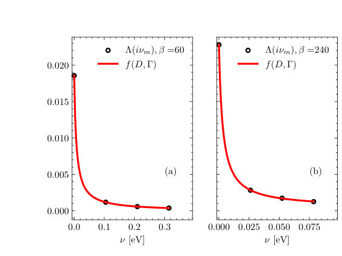
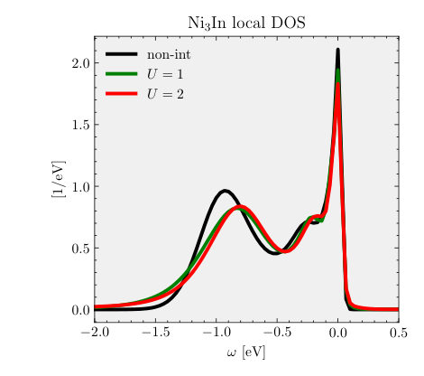
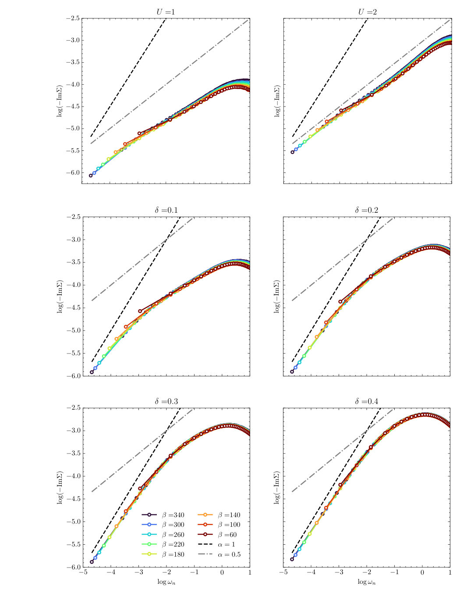
Summary. This paper uses DMFT to show that the strange metallicity in the Kagome metal Ni3In arises from a partially filled quasi-flat band. The researchers demonstrate that a single-band Hubbard model can capture the non-Fermi-liquid behavior and the crossover to a heavy Fermi-liquid regime upon hole doping. This provides a microscopic link between the Kagome lattice geometry and anomalous transport properties.
Why it may be interesting. not directly relevant
Main problem. Investigating the microscopic origins of strange metallicity and the coexistence of localized and itinerant electronic degrees of freedom in the Kagome metal Ni3In.
Main result. The study finds that a single-band Hubbard model can reproduce the linear-in-T resistivity and non-Fermi-liquid behavior, which is driven by the presence of a partially filled quasi-flat band.
Method. Dynamical Mean Field Theory (DMFT) using a hybridization-expansion continuous-time Monte Carlo (CT-HYB) solver applied to a Hubbard model derived from DFT-based Wannier functions.
Model / system. The physical system is the Kagome metal Ni3In. The theoretical model is a minimal single-band Hubbard model on a stacked triangular lattice, constructed from Compact Molecular Orbitals (CMOs) to capture the electronic structure near the Fermi level.
Key observables. Temperature-dependent resistivity, imaginary part of the self-energy, local density of states (DOS), and static local spin susceptibility.
Important parameters / regimes. Hubbard repulsion U (1-2 eV), band filling (n approx 1.85), and temperature (32-193 K).
Assumptions / limitations. The resistivity calculation neglects vertex corrections within the DMFT approximation; the model is reduced to a minimal single-band Hubbard model.
Figures summary. Figure 1 shows the Ni Kagome layer and orbital axes; Figure 2 displays DFT bandstructure and DOS; Figure 10-11 illustrate the stacked triangular lattice model and orbital character of the CMO band; Figure 12 provides a numerical benchmark for resistivity.
Paper structure. The paper introduces the problem of strange metallicity in Ni3In, describes the construction of the Hubbard model from DFT/Wannier functions, presents DMFT results regarding self-energy and resistivity, explores the effects of hole doping, and concludes with a discussion on the role of the quasi-flat band.
Strange metallicity, characterized by a linear temperature dependence of the resistivity, is observed in a broad range of correlated materials, including heavy-fermion compounds and cuprate superconductors. It has also recently been reported for the Kagome metal Ni$_3$In, where almost localized and itinerant electronic degrees of freedom coexist as a result of a partially flat band. We investigate the correlated electronic structure and transport properties of Ni$_3$In with dynamical mean field theory (DMFT) calculations performed on a minimal single-band Hubbard model, constructed from compact molecular orbitals. Despite the large band filling, even for moderate Hubbard repulsion, we observe a non-Fermi-liquid like frequency dependence of the self-energy, as well as the formation of local magnetic moments. With increased hole doping, a crossover to a heavy Fermi-liquid regime is found. We interpret these results in terms of an effective model for the partially filled narrow band near $k_z=0$.
Authors: J. Schwardt, J. C. Budich
Type: theory · Category: disordered systems and neural networks · PDF: https://arxiv.org/pdf/2605.20328v1
Analysis basis: full PDF text, analyzed in chunks
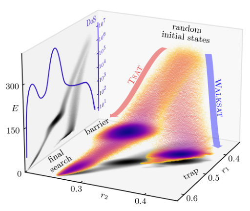
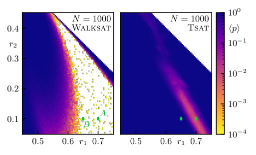
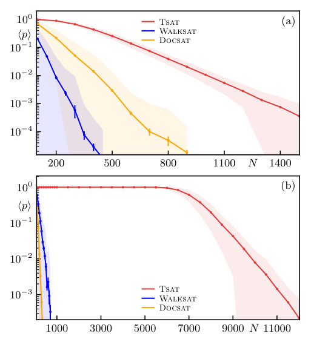
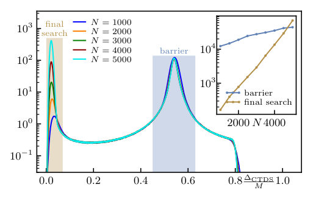
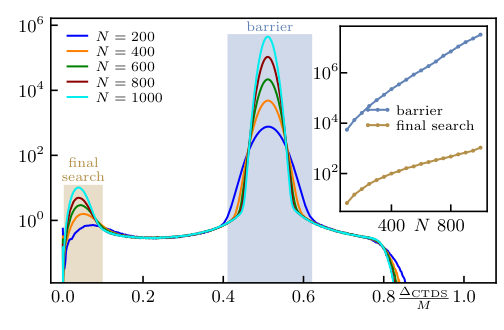
Summary. The paper presents a new algorithm, Target-SAT, that significantly improves the ability to solve the hardest instances of random 3-SAT problems. By navigating through a specific parameter space of clause distributions, the algorithm overcomes a major complexity barrier that previously limited stochastic local search methods. This provides new insights into the landscape of computational hardness in frustrated systems.
Why it may be interesting. not directly relevant
Main problem. Overcoming the computational hardness of random 3-SAT instances in the most difficult regime, characterized by a critical line of hard instances and a vast low-energy trap.
Main result. The introduction of the Target-SAT (TSAT) algorithm, which roughly triples the tractable problem size in the hardest regime and identifies a specific complexity barrier in the clause-type distribution space.
Method. A new Stochastic Local Search (SLS) heuristic called TSAT that uses statistical information from the Clause-Type Distribution Space (CTDS) to actively guide the search toward a target distribution.
Model / system. Random 3-SAT problems mapped to Ising spin Hamiltonians, representing strongly correlated many-body systems with rugged energy landscapes and frustrated magnetic interactions.
Key observables. Clause-Type Distribution (CTD), average success probability, energy (number of unsatisfied clauses), and scaling of runtime.
Important parameters / regimes. Clause density (alpha), clause-type distribution ratios (r1, r2), system size (N), and the critical parameter line.
Assumptions / limitations. The study focuses on random 3-SAT instances; the effectiveness of the algorithm on highly structured or practical non-random problems is not yet established.
Figures summary. Figure 1 shows search trajectories in the CTDS; Figure 2 compares success probabilities of Walksat and Tsat; Figure 3 shows scaling of success probability with N; Figure 4 shows the emergence of complexity barriers in state histograms; Figure 7 compares solved problem ratios across different regimes.
Paper structure. The paper introduces the problem of 3-SAT hardness, presents the TSAT algorithm, compares its performance against Walksat and complete solvers, analyzes the complexity barriers in the CTDS, and discusses scaling and limitations.
Optimization problems such as the NP-complete 3-SAT provide an important benchmark for the difficult task of finding ground-states in strongly correlated many-body systems with rugged energy landscapes. The study of random 3-SAT problems as Ising spin Hamiltonians in statistical physics has yielded major insights including the existence of a satisfiability phase transition, and the prediction of a critical parameter line of particularly hard instances. Yet, progress on solving those instances has been scarce for several decades. Here, introducing the Target-SAT (TSAT) algorithm, we roughly triple the tractable problem sizes in the hardest regime, with an even greater improvement in a vast range of neighboring regions. By leveraging statistical information hidden in the combinatorial constraints of the problem, TSAT is actively guided in its stochastic local search toward a target within the relevant parameter space. Our analysis also explains why established local search algorithms are limited to relatively small system sizes due to a vast low-energy trap. Furthermore, we characterize the aforementioned critical line in terms of a dominant additional complexity barrier, whose exponential scaling is quickly overcome by TSAT only in the surrounding parameter space. With TSAT, the lead in solving the hardest known random satisfiability problems returns to the realm of stochastic local search algorithms.
Authors: Sashank Singam, Nick G. Jones, Abhishodh Prakash
Type: theory · Category: strongly correlated electrons · PDF: https://arxiv.org/pdf/2605.20339v1
Analysis basis: full PDF text, analyzed in chunks
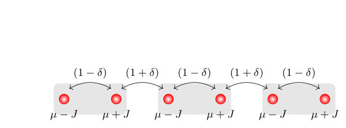
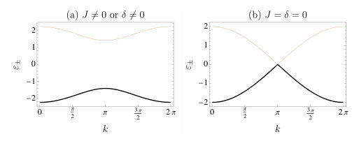
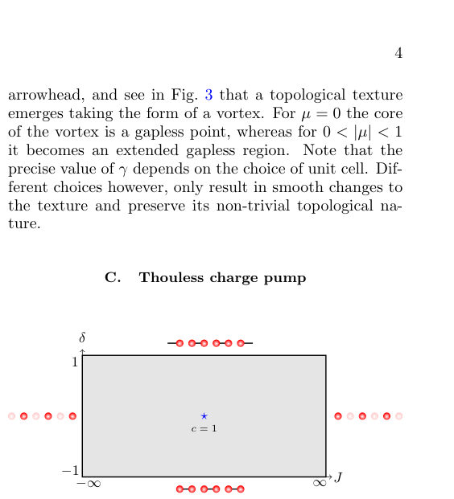
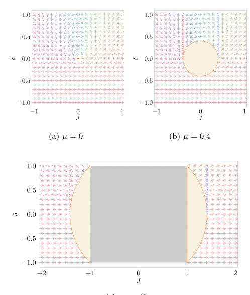
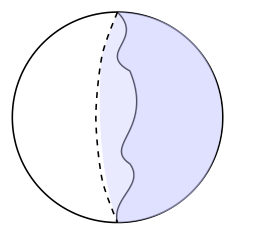
Summary. This paper demonstrates that even 'featureless' insulators, which lack topological order, can possess highly structured phase diagrams filled with topological textures like vortices. By using a recursive construction method, the authors show how these textures and their associated edge modes generalize to higher dimensions and remain stable against interactions.
Why it may be interesting. not directly relevant
Main problem. Investigating the existence of topological textures (vortices and higher-dimensional geometric invariants) within the phase diagrams of featureless, topologically trivial insulators.
Main result. The authors show that trivial insulating phases can host non-trivial topological textures in parameter space, where gap-closing diabolical points act as singularities and lead to robust, sometimes 'estranged' edge modes.
Method. The study uses a 'suspension construction' to generalize 1D models to higher dimensions, employing Berry-Bloch connections, Chern-Simons forms, and effective field theory (Dirac fermion Lagrangians) to compute topological invariants.
Model / system. Non-interacting, charge-conserving 'class A' fermions, specifically utilizing the 1D Rice-Mele model and its higher-dimensional 'ascendants' constructed via iterative stacking.
Key observables. Berry phases, higher-dimensional Chern-Simons forms, Chern numbers (C1, C2), and edge mode localization/robustness.
Important parameters / regimes. Staggered hopping (delta), staggered potential (J), chemical potential (mu), and interaction strength (U).
Assumptions / limitations. The primary focus is restricted to non-interacting fermion systems and the Altland-Zirnbauer symmetry class A.
Figures summary. Figure 1 shows the Rice-Mele model schematic; Figure 2 displays single-particle energy dispersion; Figure 22/23 show phase diagrams for the QWZ model and its ascendants.
Paper structure. The paper introduces the concept of textures in trivial phases, develops the 1D Rice-Mele model analysis, introduces the suspension construction for higher dimensions, applies effective field theory to study stability and edge modes, and concludes with a generalization to arbitrary dimensions and interacting spin systems.
We study phase diagrams of charge-conserving class A' non-interacting fermions, focusing on the trivial phase in various dimensions. Such phases are usually termedfeatureless' to distinguish them from those others with either symmetry-broken or topological order. We show that the presence of non-trivial topological families of states, including charge pumps and their generalizations, results in phase diagrams being endowed with non-trivial topological textures that can be visualized through Berry phases and their higher-dimensional generalizations. We show that for non-interacting fermion systems with translation invariance, these higher' Berry phases can be computed using integrals of non-abelian Chern-Simons forms of the Berry-Bloch connection over momentum and parameter spaces. Singularities in these textures correspond to gap-closing loci ofdiabolical points', which represent the obstruction to contracting topologically non-trivial families of states, and bulk-boundary correspondence results in a locus of robust boundary modes that terminate at the bulk diabolical points. In the presence of finite chemical potential, we argue that the edge modes are generically robust without any need for fine-tuning for two and higher dimensions, whereas in one dimension they are `estranged' in the phase diagram, i.e. appearing at different parameter values for different edges. We demonstrate our results by constructing several microscopic models of non-interacting fermions. We argue stability to interactions and explore proximate phase diagrams by mapping to continuum field theories.
Authors: Ana M. Montero, Andrés Santos, Péter Gurin, Szabolcs Varga
Type: theory · Category: statistical mechanics · PDF: https://arxiv.org/pdf/2605.21003v1
Analysis basis: full PDF text, analyzed in chunks
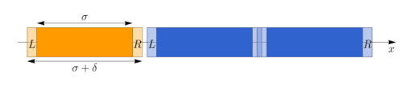
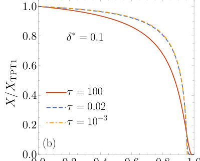
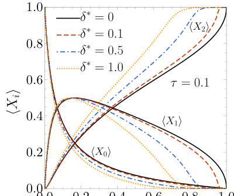
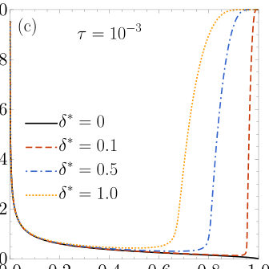
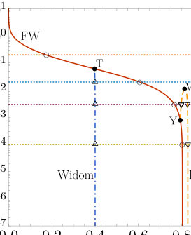
Summary. This paper provides an exact analytical treatment of 1D patchy hard rods to demonstrate where standard association theories fail. It reveals that finite-range interactions introduce complex structural transitions, such as the ECO line, which are absent in the simpler sticky-limit model.
Why it may be interesting. not directly relevant
Main problem. The study investigates the accuracy of Wertheim's first-order thermodynamic perturbation theory (TPT1) for 1D divalent patchy hard rods and explores the structural complexity arising from finite-range interactions.
Main result. The authors show that while TPT1 is exact in the zero-range sticky limit, it fails for finite-range interactions; they identify new structural features like the ECO line and demonstrate that the high-pressure scaling of the correlation length changes depending on the interaction range.
Method. The authors use analytical derivations via the isothermal-isobaric ensemble and Laplace-pole analysis of the structure factor to compare exact solutions against TPT1 approximations.
Model / system. A one-dimensional system of divalent patchy hard rods with a hard-core diameter sigma and attractive square-well patches of width delta and depth epsilon located at the rod tips.
Key observables. Pressure, fraction of unbonded sites, pair correlation function, correlation length, and structural lines (Fisher-Widom, Widom, and ECO lines).
Important parameters / regimes. Rod length (sigma), interaction range (delta), well depth (epsilon), inverse stickiness (tau), and number density (rho).
Assumptions / limitations. The system is confined to a strictly 1D channel (single-file regime) preventing rotation or particle overtaking; the study focuses on the nearest-neighbor bonding limit.
Figures summary. Figure 1 shows a schematic of the 1D rods; Figure 2 compares exact vs TPT1 pressure; Figure 3 shows the density dependence of the pressure ratio; Figure 5 illustrates structural lines and correlation length behavior.
Paper structure. The paper introduces the 1D patchy model, derives exact thermodynamic and structural properties using Laplace transforms, compares these results to Wertheim's TPT1, and analyzes various structural regimes and asymptotic limits.
We investigate the thermodynamic and structural properties of divalent patchy hard rods confined to a one-dimensional channel by modeling the bonding sites as attractive square-well (SW) patches located at the rod tips. The zero-range sticky limit is recovered by letting the well width vanish while keeping the stickiness parameter finite. While Wertheim's first-order thermodynamic perturbation theory (TPT1) becomes exact in this sticky limit, it fails for finite-range site-site interactions. We show that the theory can be made exact in one dimension by replacing the standard law of mass action with an exact relation between the density and the fraction of unbonded sites, together with an exact bonding free-energy contribution. Finite-range SW sites produce a richer structural behavior than sticky sites, including monotonic and oscillatory asymptotic decay of the pair correlation function, separated by the Fisher--Widom line. In the monotonic regime, the correlation length exhibits an absolute maximum defining the Widom line, while in the oscillatory regime it may display a local maximum and minimum, whose locus defines the ``Extrema of the Correlation length under Oscillatory decay'' (ECO) line. These features disappear in the sticky limit, where the system remains entirely in the oscillatory regime. We also show that the high-pressure behavior of the correlation length changes from $ξ\sim p^2$ for finite-range SW sites to $ξ\sim p^3$ in the sticky limit.
Authors: G. E. Volovik
Type: theory · Category: statistical mechanics · PDF: https://arxiv.org/pdf/2605.21047v1
Analysis basis: full PDF text, analyzed in chunks
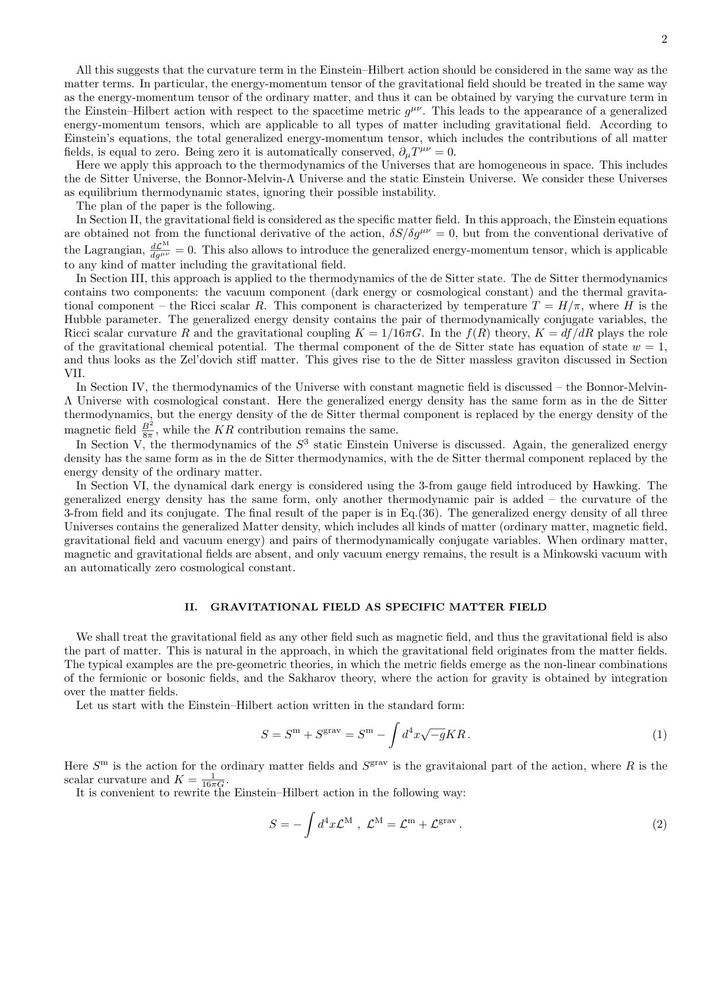
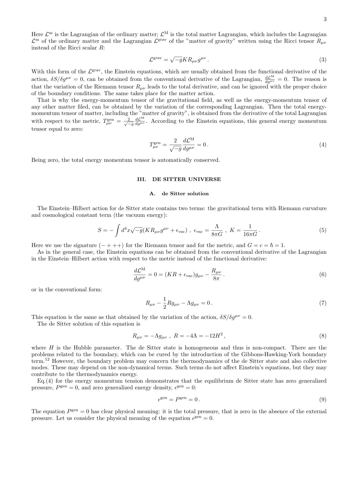
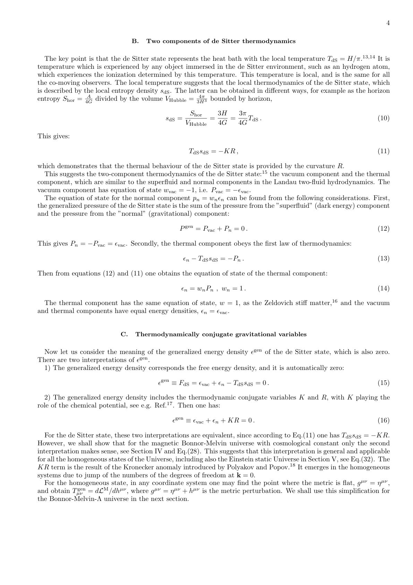
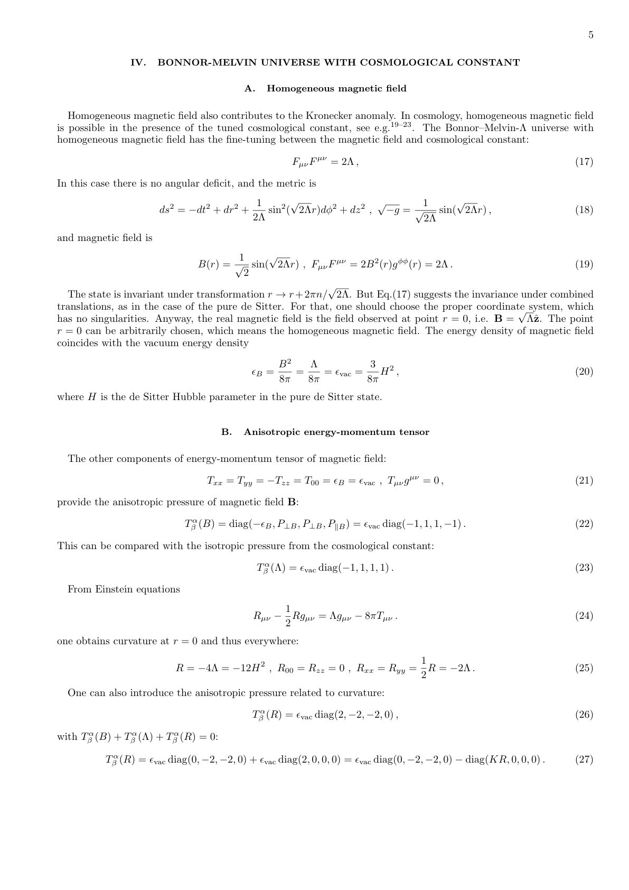
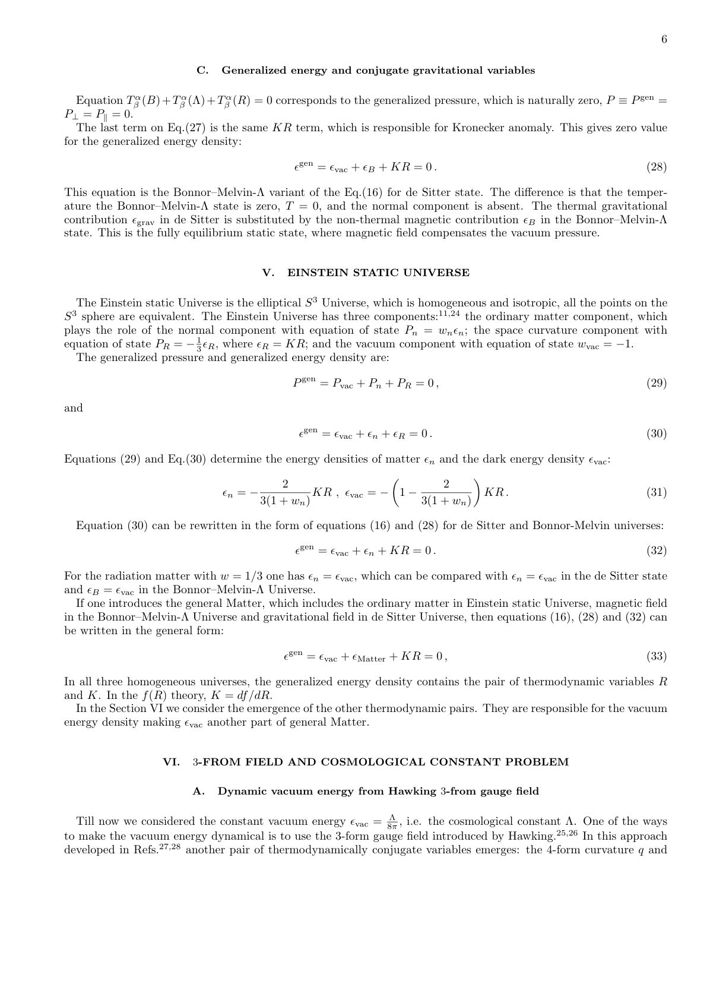
Summary. This paper proposes a unified thermodynamic description for different types of homogeneous universes by treating the gravitational field as a matter field. It shows that the cosmological constant problem can be resolved via thermodynamic compensation in the Minkowski vacuum. Additionally, it identifies the de Sitter graviton as the second sound of a two-fluid system.
Why it may be interesting. The use of Landau's two-fluid hydrodynamics and the identification of gravitons as 'second sound' provides a deep connection between relativistic cosmology and the many-body physics of superfluids.
Main problem. Investigating the thermodynamics of homogeneous universes (de Sitter, Bonnor-Melvin, and Einstein static) and addressing the cosmological constant problem through an emergent gravity framework.
Main result. The author demonstrates that these three distinct universes share identical thermodynamic properties and that the cosmological constant naturally vanishes in the Minkowski vacuum due to thermodynamic compensation.
Method. The paper employs a two-fluid hydrodynamic analogy (similar to Landau's superfluid model) and a generalized energy-momentum tensor construction within a pre-geometric/emergent gravity framework.
Model / system. The study considers three homogeneous cosmological models: the de Sitter Universe (vacuum energy + thermal gravity), the Bonnor-Melvin-Lambda Universe (magnetic field + vacuum energy), and the static Einstein Universe (ordinary matter + vacuum energy).
Key observables. Generalized energy density and pressure, temperature (Hubble-related), entropy density, and the speed of second sound.
Important parameters / regimes. Ricci scalar curvature (R), gravitational coupling (K), 4-form curvature (q), and the equation of state parameter (w).
Assumptions / limitations. The universes are treated as equilibrium thermodynamic states, and boundary effects in non-compact de Sitter space are ignored.
Paper structure. The paper begins by establishing the emergent gravity framework, proceeds to construct the thermodynamic formalism for the three specific universes, applies a two-fluid hydrodynamic analogy to identify gravitons as second sound, and concludes with the derivation of the zero cosmological constant in the Minkowski limit.
In the theories, in which dynamic gravitational field emerges from the underlying matter fields, the gravitational field can be considered as a part of matter. Using this approach, we construct the thermodynamics of the homogeneous Universes -- the de Sitter Universe, the Bonnor-Melvin-$Λ$ Universe and the static Einstein Universe. It is demonstrated that although these three Universes have different types of matter fields (ordinary matter, magnetic field, gravitational field and vacuum energy), they have the same thermodynamic properties. Their energy densities obey the same equation, which contains the corresponding matter densities and the pairs of the thermodynamically conjugate variables. In Minkowski vacuum, where the ordinary matter and magnetic and gravitational fields are absent, this thermodynamic approach automatically leads to zero cosmological constant.
Authors: Xun-Jiang Luo, Dan Li, Rui-Chun Xiao, Ding-Fu Shao, Lei Li, Mingliang Tian, Yugui Yao
Type: both · Category: strongly correlated electrons · PDF: https://arxiv.org/pdf/2605.21336v1
Analysis basis: full PDF text, analyzed in chunks
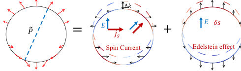
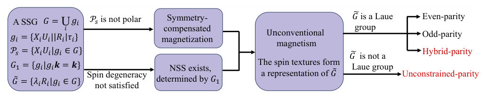
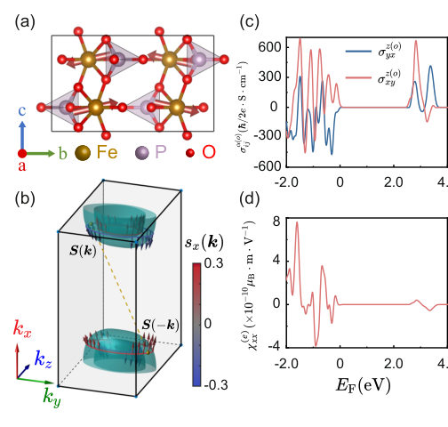
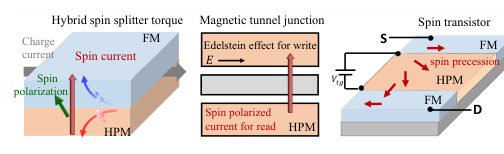
Summary. This paper establishes a new symmetry-based classification for unconventional magnetism, predicting the existence of hybrid-parity and unconstrained-parity magnets. It demonstrates that hybrid-parity magnets allow for the simultaneous occurrence of spin current and Edelstein effects, offering a new platform for multifunctional spintronic devices.
Why it may be interesting. not directly relevant
Main problem. The paper seeks to complete the symmetry taxonomy of unconventional magnetism beyond the established even-parity (altermagnets) and odd-parity paradigms.
Main result. The authors identify two new magnetic classes, hybrid-parity magnets (HPMs) and unconstrained-parity magnets (UPMs), and demonstrate that HPMs enable the coexistence of spin current and Edelstein effects.
Method. The study uses Spin Space Group (SSG) theory for symmetry classification, combined with first-principles DFT calculations and tight-binding modeling to validate transport properties.
Model / system. The study focuses on symmetry-compensated magnets, using FePO4 as a prototypical example of a Type-I hybrid-parity magnet, and explores candidate materials identified via the MAGNDATA database.
Key observables. Non-relativistic spin splitting (NSS), spin current conductivity, Edelstein susceptibility, and spin texture parity.
Important parameters / regimes. Spin texture dimensionality (collinear, coplanar, noncoplanar), spin-splitting group (SSG) symmetries, and effective U parameter for Fe-3d orbitals.
Assumptions / limitations. The classification assumes the validity of the Spin Space Group framework and uses the constant relaxation-time approximation for transport calculations.
Figures summary. Figure 1 illustrates the four classes of unconventional magnetism and the decomposition of spin textures; Figure 2 provides a symmetry classification flowchart; Figure 3 shows the crystal structure and Fermi surface of FePO4; Figure 4 depicts proposed spintronic device architectures.
Paper structure. The paper begins with a symmetry-based classification of unconventional magnetism, introduces the new HPM and UPM classes, derives symmetry criteria for HPM types, validates these findings with DFT calculations on FePO4, and concludes with proposed spintronic applications.
Unconventional magnetism has emerged as a transformative frontier in condensed matter physics. Such phases are characterized by substantial non-relativistic spin splitting (NSS) in symmetry-compensated magnets. They have been classified by the parity of their spin textures under momentum inversion, leading to the paradigms of altermagnets (even-parity) and odd-parity magnets. However, the full symmetry landscape remains largely unexplored. In this Letter, we present a systematic classification framework for unconventional magnetism based on the representation theory of the spin textures and the associated parity properties. Within this framework, we predict two previously unidentified classes beyond the established pure-parity categories: hybrid-parity magnets (HPMs) and unconstrained-parity magnets (UPMs), where the spin textures exhibit contrasting parities among their Cartesian components and the parity of the spin textures is ill-defined, respectively. We derive universal symmetry criteria that categorize HPMs into three distinct types. Importantly, by combining the spin splitting characteristics of altermagnets and odd-parity magnets, HPMs can enable the coexistence of the spin current and Edelstein effects. Taking FePO4 as an example, we perform first-principles calculations to demonstrate this coexistence. Finally, we discuss the potential applications of HPMs in spintronic devices. Our work provides a comprehensive symmetry classification of unconventional magnetism and establishes HPMs as a promising platform for multi-functional spintronics.
Authors: Xin Wang, Yang Xu, Jin Shang, Yi Xing, Jie Zhang, Yujie Wang, Walter Kob, Matteo Baggioli
Type: both · Category: disordered systems and neural networks · PDF: https://arxiv.org/pdf/2605.20847v1
Analysis basis: full PDF text, analyzed in chunks
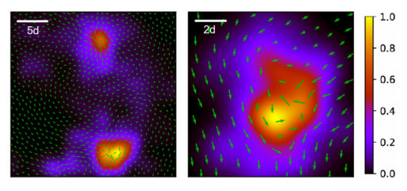
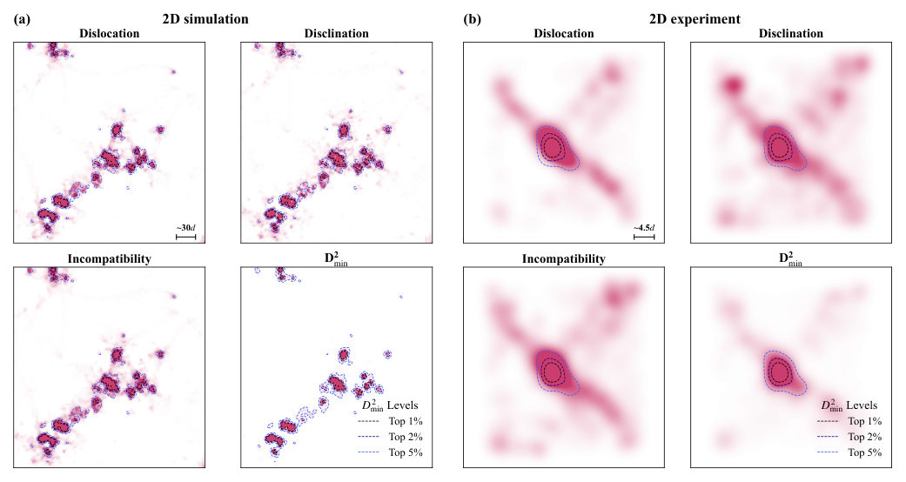
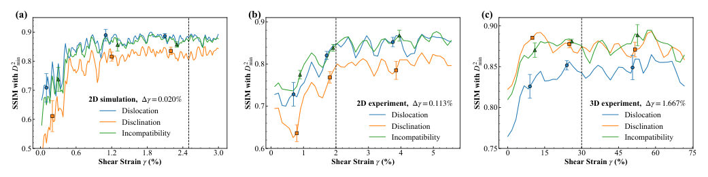
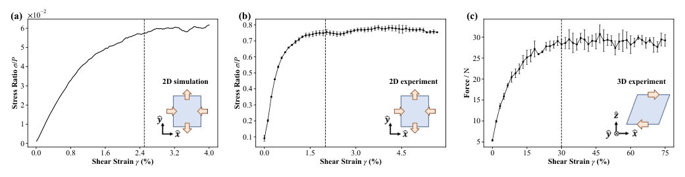
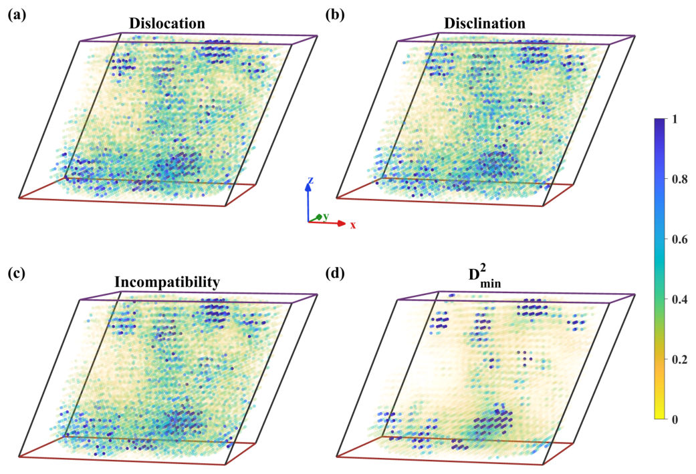
Summary. This paper proposes a unified framework for understanding plasticity by applying continuous topological and geometric descriptors to both crystalline and amorphous materials. By treating defects as continuous fields rather than discrete singularities, the authors successfully bridge the gap between ordered and disordered systems. The findings show that these fields accurately predict plastic events and highlight the increasing importance of rotational defects in 3D systems.
Why it may be interesting. not directly relevant
Main problem. The difficulty of identifying the specific regions responsible for plastic flow in amorphous solids due to the lack of long-range order and the absence of discrete topological defects like dislocations found in crystals.
Main result. The introduction of continuous dislocation, disclination, and incompatibility density fields provides a unified description of plasticity that correlates strongly with standard measures like D2min and reveals that rotational defects become dominant in 3D.
Method. The authors apply differential geometry to map particle displacement fields onto a grid, calculating continuous defect densities using the Nye tensor, Frank tensor, and Saint-Venant incompatibility tensor.
Model / system. The study utilizes 2D simulated Lennard-Jones glasses, 2D experimental photoelastic granular disks, and 3D experimental 3D-printed plastic sphere packings under shear.
Key observables. Dislocation density, disclination density, incompatibility density, D2min (non-affine squared displacement), and Structural Similarity Index Measure (SSIM).
Important parameters / regimes. Shear strain (pre-yield vs. post-yield regimes), particle diameter (d), and noise amplitude (R).
Assumptions / limitations. The approach treats discrete defects as continuous fields and assumes that the displacement field can be meaningfully interpolated onto a regular lattice.
Figures summary. Figure 1 shows displacement fields overlaid with dislocation density; Figure 2 compares defect densities to D2min in 2D; Figure 3 quantifies SSIM correlation as a function of strain in 2D and 3D; Figure 4 shows stress-strain response across different platforms.
Paper structure. The paper begins by defining the problem of plasticity in disordered matter, introduces the mathematical framework for continuous defect densities, presents results from 2D simulations and experiments, extends the findings to 3D systems, and concludes with a robustness analysis against noise and discretization.
Identifying the regions responsible for plastic flow in amorphous solids remains an open problem, since structural disorder seems to prevent the direct application of concepts such as dislocations, topological defects that successfully describe irreversible deformations in crystalline systems. Here, we introduce fields of dislocation, disclination, and incompatibility densities, that reduce to the standard sources of plasticity in crystals and assess their predictive power in amorphous materials. We find that, in a simulated two-dimensional glass as well in two- and three-dimensional experimental granular systems, these fields exhibit strong spatial correlations with $D^2_{\text{min}}$, the standard measure used to locate plastic events under shear in disordered solids. Unlike $D^2_{\text{min}}$, these fields also allow to disentangle rotational and translational contributions to the plastic events, revealing that rotational defects becoming dominant in three dimensions. Our approach paves the way for a unified description of plasticity in crystalline and amorphous solids.
Papers from cond-mat.mtrl-sci, mes-hall, other, soft, supr-con. These archives are de-prioritized — they appear at the end regardless of relevance score.
Authors: A. Herrero Otermin, N. Carlon Zambon, A. Bieganowska, F. Jabeen, L. Viña, C. Antón-Solanas
Type: both · Category: other · PDF: https://arxiv.org/pdf/2605.20927v1
Analysis basis: full PDF text, analyzed in chunks
Topic relevance: 🔥 quantum optics experiment 4/5 · interference shaping light 3/5 · Tavis-Cummings & cavity-many-emitter 2/5 · analog quantum simulation 2/5 · correlated cavity matter 2/5 · driven-dissipative phase transition 2/5 · non-equilibrium dynamics 2/5 · spintronics-quantum-optics interface 2/5

Summary. This paper demonstrates how a 2D photonic lattice can be used to achieve spin-polarized lasing with extended spatial coherence. By controlling the pump polarization, the researchers can tune the handedness of the emitted light, providing a platform for spin-controlled coherent emission in large-scale optical systems.
Why it may be interesting. This work is highly relevant to quantum optics and open quantum systems as it demonstrates the manipulation of spin-polarized coherent states and the transition between different light-matter coupling regimes in an engineered lattice.
Main problem. The study aims to develop a scalable, coherent light source with controllable polarization by engineering the photonic band structure of coupled microlaser arrays, addressing the loss of spatial coherence and multi-mode instabilities in large-area VCSELs.
Main result. The researchers demonstrated a transition from the strong-coupling (polariton) regime to the photon lasing regime in a 2D photonic lattice, achieving spin-controlled coherent emission where the light's circular polarization follows the pump's handedness.
Method. The work combines electron-beam lithography and wet etching to fabricate a GaAs/InGaAs microcavity lattice, followed by micro-photoluminescence, polarization-resolved spectroscopy, and Michelson interferometry, complemented by a two-mode spin-laser rate equation model.
Model / system. A 2D staggered square photonic lattice of rounded rectangular GaAs/InGaAs semiconductor microcavity mesas, which supports both exciton-polariton modes and photon lasing regimes.
Key observables. Energy- and momentum-resolved emission, full Stokes parameters (S0, S3), spatial coherence (g1), and Rabi splitting.
Important parameters / regimes. Lasing threshold (Pth ~ 0.3 mW/um2), Rabi splitting (3.35 meV), and TE-TM splitting (0.05 meV/um2).
Assumptions / limitations. The theoretical model assumes a minimal two-mode system and neglects gain saturation effects, which could potentially hide bistability or chaos.
Figures summary. Fig 1: Schematic of the lattice design; Fig 2: Nonlinear input-output response and transition to the weak-coupling regime; Fig 3: Spatial coherence maps; Fig 4: Polarization maps (S0S3) and the dependence of S3 on pump power and QWP angle.
Paper structure. The paper introduces the challenge of large-area VCSEL stability, describes the fabrication and design of the 2D photonic lattice, presents experimental evidence of the polariton-to-lasing transition, analyzes the spin-control of polarization, and concludes with a theoretical model validating the observed spin-injection dynamics.
We characterize spin-polarized lasing in a two-dimensional photonic lattice fabricated from a GaAs/InGaAs semiconductor microcavity sample. The lattice is defined by a staggered arrangement of rounded rectangular micrometric mesas that laterally confine and couple the optical modes. Polarization-, angle-, and energy-resolved micro-photoluminescence measurements reveal the transition from the strong-coupling regime to photon lasing, accompanied by extended spatial coherence across several lattice unit cells. Under circularly polarized nonresonant excitation, the emitted light acquires a controllable circular polarization whose handedness follows that of the pump. These results establish photonic-lattice VCSELs as a platform for spin-controlled coherent emission in extended optical systems.
Authors: P. M. Martinez, O. Mateos-Lopez, J. C. Cuevas, J. G. Vilhena
Type: theory · Category: statistical mechanics · PDF: https://arxiv.org/pdf/2605.20517v1
Analysis basis: full PDF text, analyzed in chunks
Topic relevance: 🔥 non-equilibrium dynamics 4/5 · 🔥 non-equilibrium universality 4/5
Summary. This paper demonstrates that heat transport in micrometer-scale molecular junctions does not follow Fourier's law, instead exhibiting superdiffusive scaling. The divergence in thermal conductivity is driven by low-frequency acoustic modes that remain ballistic even at large scales. This finding highlights a fundamental coexistence of ballistic and diffusive transport in 1D momentum-conserving systems.
Why it may be interesting. The paper explores non-equilibrium transport and the breakdown of standard kinetic theory in 1D systems, which is highly relevant to understanding anomalous diffusion and universality classes in many-body dynamics.
Main problem. Investigating the breakdown of Fourier's law and the validity of the Boltzmann transport equation in quasi-1D molecular systems, specifically looking for the emergence of superdiffusive heat transport.
Main result. The study finds that thermal conductivity diverges as L^{1/3}, following the Kardar-Parisi-Zhang universality class, due to the coexistence of a persistent ballistic channel (low-frequency modes) and a diffusive sector.
Method. Atomistic non-equilibrium molecular dynamics (NEMD) simulations combined with frequency-resolved spectral heat current decomposition and a 3-resistor model to isolate intrinsic conductance.
Model / system. Au-alkane-Au single-molecule junctions spanning lengths from 0.5 nm to 4 micrometers, modeled using the OPLS-AA force field for the molecular chain and EAM for the gold electrodes.
Key observables. Thermal conductance (G_th), thermal conductivity (kappa_th), spectral heat current q(omega), vibrational density of states (VDoS), and spectral temperature T(R; omega).
Important parameters / regimes. Chain length (0.5 nm to 4 um), temperature (310 K), mechanical tension (0.35 nN to 1.05 nN), and frequency-dependent transport regimes (ballistic, superdiffusive, diffusive).
Assumptions / limitations. Neglected Coulomb terms due to highly stretched conformations; reliance on classical molecular dynamics which may not capture all quantum effects at very low temperatures.
Figures summary. Schematic of the simulation setup; plots of thermal conductance and conductivity vs. length showing scaling regimes; spectral heat current and VDoS; and temperature profiles/spectral temperature analysis.
Paper structure. Introduction to the breakdown of Fourier's law; description of the NEMD simulation setup and molecular models; presentation of conductance scaling results; frequency-resolved analysis to identify the ballistic/diffusive coexistence; and discussion of universality and chemical insensitivity.
Boltzmann transport theory, the standard framework for predicting thermal conductivity, assumes that every vibrational mode eventually scatters, acquiring a finite lifetime that yields a convergent, length-independent thermal conductivity: Fourier's law. Here we show that this assumption fails in a real molecular system. Through atomistic simulations of Au-alkane-Au single-molecule junctions spanning five orders of magnitude in length (0.5~nm to 4~$μ$m), we find that thermal conductivity never converges. Transport is ballistic for up to one hundred nanometers at room temperature, extending nearly two orders of magnitude beyond existing single-molecule measurements. Past this window, conductivity diverges as $L^{1/3}$, the scaling predicted by the Kardar-Parisi-Zhang universality class for momentum-conserving systems. Frequency-resolved decomposition of the heat current reveals the mechanism behind the divergence. Low-frequency acoustic modes never thermalize: protected by momentum conservation, they remain ballistic at every chain length, still carrying 50\% of the total heat current at $L = 2~μ$m. All other modes thermalize collectively as discrete vibrational states merge into scattering-active phonon bands with increasing length. Hence, the diverging conductivity emerges from the boundary between these coexisting transport regimes: as $L$ grows, the onset of scattering shifts progressively toward lower frequencies, suppressing the ballistic channel at a rate that sustains the $L^{1/3}$ divergence, leaving a finite contribution at every length. This coexistence of permanent ballistic and well-behaved diffusive transport, anticipated in abstract one-dimensional lattice models, survives the structural and chemical complexity of real micrometer-sized junctions.
Authors: Xuanxi Cai, Changhua Bao, Benshu Fan, Haoyuan Zhong, Fei Wang, Shaohua Zhou, Tianyun Lin, Hongyun Zhang, Pu Yu, Peizhe Tang, Wenhui Duan, Shuyun Zhou
Type: both · Category: other · PDF: https://arxiv.org/pdf/2605.21339v1
Analysis basis: full PDF text, analyzed in chunks
Topic relevance: 🔥 non-equilibrium dynamics 4/5
Summary. This paper uses TrARPES to show that in semiconductors like black phosphorus, the total electron spectral weight is conserved when driving with below-gap mid-infrared light, despite the creation of multiple Floquet sidebands. This spectral sum rule is broken when the driving energy exceeds the bandgap, leading to direct interband transitions. These findings are crucial for controlling transient material properties via light-field engineering.
Why it may be interesting. The discovery of a spectral sum rule and the observation of population inversion in light-dressed states provide fundamental insights into the non-equilibrium dynamics of driven quantum systems and the conservation laws governing energy-periodic state redistribution.
Main problem. Investigating the transient occupation dynamics of Floquet-Volkov states and determining the validity of a spectral sum rule in semiconductors under intense mid-infrared driving.
Main result. The study discovers that under below-gap driving, the total spectral weight of Floquet sidebands is conserved (a spectral sum rule), whereas this rule is violated during above-gap pumping due to interband transitions.
Method. Time- and angle-resolved photoemission spectroscopy (TrARPES) is used to measure spectral weight redistribution, complemented by Floquet theory and Bessel function approximations to model sideband intensities.
Model / system. The experimental system consists of two semiconductors, black phosphorus and 2H-MoSe2, subjected to mid-infrared (160 meV) pulse driving.
Key observables. Floquet-Volkov sidebands, spectral weight S(k), isosbestic points in Energy Distribution Curves (EDCs), and pump fluence.
Important parameters / regimes. Below-gap vs. above-gap pumping regimes, pump photon energy (160 meV), and pump fluence (up to 1.1 mJ/cm2).
Assumptions / limitations. The use of a Bessel function approximation neglects potential coupling with external baths, and the study does not cover the sub-cycle regime.
Figures summary. Figure 2 shows spectral weight conservation in black phosphorus; Figure 3 shows conservation in MoSe2 at the K valley; Figure 4 compares the conservation in below-gap driving to the violation in above-gap driving.
Paper structure. The paper introduces the problem of Floquet-Volkov dynamics, presents TrARPES experimental results for black phosphorus and MoSe2, demonstrates the spectral sum rule and its violation, and provides a theoretical framework using Floquet theory and Bessel functions to explain the observed weight redistribution.
Time-periodic light fields can dress electronic states in quantum materials, forming Floquet states whose dynamic occupation determines transient material properties. Here by using time- and angle-resolved photoemission spectroscopy (TrARPES), we reveal the transient occupation of Floquet-Volkov states in two semiconductors, black phosphorus and MoSe$_2$. While the occupation of the light-induced sidebands, directly reflected by TrARPES spectral weight, strongly depends on the driving field, we find that the total spectral weight obtained by summing up all sidebands is conserved upon below-gap driving. Our work provides critical insights into the Floquet population dynamics, which are essential for light-field tailoring of transient material properties.
Authors: Luca Mikadze, Peter M. Oppeneer, Markus Weißenhofer
Type: theory · Category: statistical mechanics · PDF: https://arxiv.org/pdf/2605.21389v1
Analysis basis: full PDF text, analyzed in chunks
Topic relevance: non-equilibrium dynamics 3/5 · Keldysh / 2PI / non-Gaussian methods 2/5 · non-equilibrium universality 2/5 · spintronics-quantum-optics interface 2/5
Summary. The paper develops a new theoretical framework to describe how ultrafast laser pulses drive non-equilibrium magnon currents in iron films. It identifies a superdiffusive transport regime that produces a spin Seebeck effect much larger than previously predicted. This work provides a way to model complex, non-thermal transport processes in magnetic materials.
Why it may be interesting. The study provides a sophisticated treatment of non-equilibrium transport and the transition from ballistic to diffusive dynamics, which is highly relevant to the study of open quantum systems and non-equilibrium many-body dynamics.
Main problem. Understanding the microscopic origin of ultrafast, non-equilibrium magnon transport and demagnetization in ferromagnetic metals beyond traditional diffusive models.
Main result. The discovery of a huge ultrafast spin Seebeck effect driven by a superdiffusive regime where magnon transport transitions from ballistic to diffusive.
Method. An ab initio-parameterized microscopic framework using the quantum Boltzmann equation to capture non-thermal magnon scattering and transport.
Model / system. Bcc Iron (Fe) thin films subjected to sub-picosecond laser excitation, modeled using an extended (N+2)-temperature model that incorporates non-thermal magnon populations.
Key observables. Magneto-optical Kerr angles (rotation and ellipticity), magnetization-versus-time curves, magnon spin current density, and transport exponent (alpha).
Important parameters / regimes. Sub-picosecond/femtosecond timescales, superdiffusive regime (1 < alpha < 2), and laser fluence (1 to 4 mJ/cm2).
Assumptions / limitations. Electrons and phonons are assumed to be internally thermalized; direct magnon-phonon coupling is neglected; higher-order magnon-magnon scattering is neglected.
Figures summary. Figure 1 illustrates the local and nonlocal (N+2)TM frameworks; Figure 2 shows temporal evolution of temperature profiles and heat currents; Figure 3 shows the magnonic spin current color map; Figure 4 shows the transport exponent evolution; Figure 6 compares simulation to experimental data and shows MOKE signals.
Paper structure. The paper introduces the limitations of the 3TM, presents the new (N+2)TM quantum Boltzmann framework, details the numerical implementation, analyzes temperature and magnetization dynamics, characterizes the superdiffusive transport regime, and validates the model against experimental MOKE data.
Subpicosecond laser excitation of ferromagnetic metals induces strongly nonequilibrium dynamics involving scattering and transport of electrons, phonons, and magnons. Widely used theoretical approaches, such as the three-temperature model and diffusion equations, are ill-suited to capture these processes on ultrafast timescales. Here, we present an ab initio-parameterized microscopic framework that incorporates nonthermal magnon scattering and transport via the quantum Boltzmann equation. We apply this approach to simulate ultrafast laser-induced demagnetization in bcc Fe films. The model predicts an ultrafast spin Seebeck effect, characterized by a strong burst of fast-moving magnonic spin current reaching technologically relevant amplitudes. Furthermore, we identify a superdiffusive transport regime: a crossover from initially ballistic magnon transport to a diffusive regime at later times. To connect our theoretical predictions to experimentally accessible observables, we calculate the magneto-optical Kerr angles resulting from the predicted depth-resolved magnetization profiles. Our framework provides a route to describe ultrafast nonthermal magnon transport beyond diffusive models and will aid in the design and interpretation of time-resolved spin-transport experiments.
Authors: Makoto Natsuume
Type: theory · Category: statistical mechanics · PDF: https://arxiv.org/pdf/2605.20415v1
Analysis basis: full PDF text, analyzed in chunks
Topic relevance: non-equilibrium dynamics 3/5 · non-equilibrium universality 3/5 · Keldysh / 2PI / non-Gaussian methods 2/5
Summary. This paper derives the exact Ginzburg-Landau parameters for the critical dynamics of holographic superconductors. By matching bulk holographic calculations to the Model F universality class, the author determines precise numerical coefficients for the system's time-dependent behavior.
Why it may be interesting. It provides an exact mapping of a holographic model to a known universality class (Model F), offering deep insights into the critical dynamics and transport coefficients of strongly coupled systems.
Main problem. The paper aims to identify the exact dual Ginzburg-Landau theory and the specific 'model F' universality class parameters for the critical dynamics of holographic superconductors and superfluids.
Main result. The author successfully identifies the dual Model F equations and obtains exact numerical coefficients for parameters such as relaxation time, diffusion constants, and thermodynamic susceptibility.
Method. The study uses the AdS/CFT correspondence to solve bulk field equations in a 5D Schwarzschild-AdS black hole background using perturbation theory and the Martin-Siggia-Rose formalism.
Model / system. A 5-dimensional Einstein-Maxwell-complex scalar system in the probe limit, which is holographically dual to a 4-dimensional system exhibiting superconductivity/superfluidity.
Key observables. Hydrodynamic poles (Maxwell diffusion and second sound modes), electric permittivity, magnetic permeability, conductivity, and the dynamic critical exponent z.
Important parameters / regimes. Chemical potential (mu), temperature (T), the deviation from criticality (epsilon_mu), and the large-Nc limit.
Assumptions / limitations. The study assumes the probe limit (no backreaction on geometry), the large-Nc limit (suppressing fluctuations), and focuses on the low-energy, long-wavelength limit near the critical point.
Paper structure. The paper begins by defining the holographic model and the dual Ginzburg-Landau framework, proceeds to analyze the high-temperature phase dynamics, investigates the low-temperature phase and mode coupling, and concludes with the electromagnetic properties of the medium.
Holographic superfluids/superconductors are one of the most studied systems in the AdS/CFT duality. In the low-energy, in the long-wavelength limit, they should be described by a Ginzburg-Landau theory. For critical dynamics, one expects that they belong to "model F" universality class. We consider a bulk 5-dimensional holographic superfluid/superconductor in the probe limit. For the holographic superconductor, we impose the boundary Maxwell equation to make the boundary Maxwell field dynamical. We identify the dual model F equations where numerical coefficients are obtained exactly.
Authors: Yiduo Wang, Yao Lu, Changshen Chen, Xiaotong Liao, Siyu Fan, Zhenyu Wang, Yaotian Liu, Subi Du, Yingze Jia, Ye Zhu, Yingwei Wang, Jun He, Song Liu, Jiawei Ruan, Zhen Chen, Kai-Qiang Lin, Yang Xu
Type: both · Category: other · PDF: https://arxiv.org/pdf/2605.21231v1
Analysis basis: full PDF text, analyzed in chunks
Topic relevance: interference shaping light 3/5 · quantum optics experiment 2/5
Summary. This paper identifies that AA-stacked MoTe2/WSe2 heterobilayers exhibit unexpected destructive SHG interference caused by a phase difference between layer-specific exciton resonances. By tuning the twist angle and excitation energy, the researchers demonstrate precise control over the SHG polarization state, including the achievement of near-circular polarization. This work provides a new framework for engineering nonlinear optical functions in moiré materials.
Why it may be interesting. The discovery of a geometric polarization singularity and the ability to engineer nonlinear polarization states via interlayer phase engineering is highly relevant to the field of nonlinear quantum optics and the development of tunable photonic components.
Main problem. The paper aims to resolve the ambiguity in stacking identification (AA vs. AB) in MoTe2/WSe2 heterobilayers and understand the origin of anomalous destructive Second Harmonic Generation (SHG) interference in AA-stacked configurations.
Main result. The authors demonstrate that AA-stacked MoTe2/WSe2 exhibits unconventional destructive SHG interference due to a pi phase difference in nonlinear susceptibility driven by distinct exciton resonances, and show that the SHG polarization can be controlled via twist angle and excitation energy.
Method. The study combines experimental techniques like Multislice Electron Ptychography (MEP) for atomic-resolution imaging, angle-resolved SHG spectroscopy, and reflectance contrast with theoretical GW-BSE calculations and a coherent superposition model.
Model / system. The system consists of MoTe2/WSe2 transition-metal dichalcogenide (TMDC) heterobilayers in AA and AB stacking configurations, encapsulated in hexagonal boron nitride (hBN). The optical response is modeled using a coherent superposition of electric fields from individual layers and a two-level Hamiltonian for exciton hybridization.
Key observables. SHG intensity, polarization ellipticity, polarization azimuth, Stokes parameters, MEP phase images, and exciton hybridization (energy anticrossing).
Important parameters / regimes. Stacking configuration (AA vs. AB), twist angle (alpha), interlayer phase difference (delta-phi), excitation photon energy, and vertical electric field (E).
Assumptions / limitations. The SHG susceptibility of the heterostructure is modeled as a linear combination of individual monolayer susceptibilities; a rigid redshift of the WSe2 spectrum is applied to account for stacking effects in calculations.
Figures summary. Figure 1 shows device fabrication and optical micrographs; Figure 2/3 details the SHG intensity, polarization states, and comparison between experimental and calculated dielectric functions; Supplemental figures include simulated electron microscopy images and polarization-dependent SHG models.
Paper structure. The paper begins with device fabrication and stacking identification via electron ptychography, moves to the investigation of anomalous SHG interference and its excitonic origin using spectroscopy and GW-BSE calculations, and concludes with the demonstration of polarization control and mapping of polarization trajectories on the Poincaré sphere.
The stacking configuration of two-dimensional materials critically governs their optical and electronic responses. Monolayer transition-metal dichalcogenides (TMDC) lack inversion symmetry and exhibit exciton-enhanced second-harmonic generation (SHG). In TMDC bilayers, 60° (0°) stacking is conventionally expected to suppress (enhance) SHG owing to destructive (constructive) interference of the layer-resolved nonlinear polarizations. Here, we report an unconventional destructive SHG interference in nearly 0°-stacked (AA-stacked) MoTe2/WSe2 heterobilayers using two independent probes: atomic-resolution imaging and stacking-sensitive exciton hybridization measurements. Supported by ab initio GW and Bethe-Salpeter equation calculations, we show that distinct two-photon resonances associated with the WSe2 C exciton and the MoTe2 D exciton generate a nearly $π$ phase difference ($Δφ$) in their second-order nonlinear susceptibilities $χ^{(2)}$, leading to the anomalous destructive interference. We further demonstrate that in small-angle twisted MoTe2/WSe2, the SHG polarization state is governed by the interplay between twist angle $α$ and phase difference $Δφ$, and can be mapped onto trajectories on the Poincaré sphere. At excitation energies satisfying $Δφ$ + 3$α$ = 180°, the SHG output becomes nearly circularly polarized (ellipticity ~ 0.91) and undergoes an abrupt 90° azimuthal rotation, corresponding to a geometric polarization singularity in the parameter space. Our findings open new routes for exciton-resonance engineered nonlinear photonics and stacking-resolved optical functionality in moiré materials.
Authors: J. Zöllner, C. Doganlar, C. García Marcilla, S. Meder, G. Koblmüller, J. J. Finley
Type: both · Category: other · PDF: https://arxiv.org/pdf/2605.20832v1
Analysis basis: full PDF text, analyzed in chunks
Topic relevance: quantum optics experiment 3/5 · interference shaping light 2/5
Summary. This paper demonstrates a method to integrate GaAsSb nanowires onto silicon racetrack resonators to create stable, low-threshold lasers. By using the silicon resonator to provide optical feedback, the researchers significantly reduced the laser linewidth and improved frequency stability. This approach provides a scalable path for integrating light sources into silicon photonic integrated circuits.
Why it may be interesting. The work demonstrates high Purcell enhancement and the use of a passive resonator to control the spectral properties of an active medium, which is highly relevant to cavity QED and the engineering of single-photon/single-mode light sources.
Main problem. Achieving stable, low-threshold, and frequency-stable lasing from GaAsSb nanowires by overcoming the broad emission linewidths and spectral instability caused by weak optical feedback in conventional cavities.
Main result. Integrating GaAsSb nanowires onto SOI racetrack resonators provides strong resonator-driven optical feedback, reducing the emission linewidth by more than a factor of four and significantly enhancing spectral stability.
Method. The study uses deterministic transfer-printing to integrate nanowires onto silicon resonators, combined with 3D FDTD simulations for mode analysis and micro-photoluminescence spectroscopy for experimental characterization.
Model / system. A hybrid photonic platform consisting of GaAsSb nanowire gain media coupled via evanescent waves to a passive Silicon-on-Insulator (SOI) racetrack resonator.
Key observables. Lasing threshold (Pth), emission linewidth, spectral stability (peak shift), cavity Q-factor, Purcell factor, and photon lifetime.
Important parameters / regimes. Lasing threshold of 8.6 +/- 1.8 uJ/cm2, Q-factor exceeding 10^4, and linewidth reduction of >4x.
Assumptions / limitations. The analysis assumes the nanowire does not significantly degrade the silicon resonator's performance and that the transfer-printing process maintains high alignment accuracy.
Figures summary. Figure 1 shows the device architecture, SEM images, and PL spectra comparison; Figure 2 presents FDTD simulations of hybrid modes, coupling efficiency, and field distributions; Figure 3 displays pump-dependent PL spectra, input-output characteristics, and quantitative linewidth/stability comparisons.
Paper structure. The paper introduces the integration problem, describes the fabrication and transfer-printing method, presents numerical simulations of mode coupling, details experimental lasing measurements and stability analysis, and concludes with the implications for silicon photonics.
Silicon photonic integrated circuits critically depend on compact on-chip light sources, for which nanowire (NW) lasers are an attractive solution. However, their practical implementation is often limited by broad emission linewidths and poor frequency stability resulting from weak optical feedback. Here, we integrate individual GaAsSb NWs by transfer-printing onto silicon-on-insulator (SOI) racetrack resonators to realize optical feedback at silicon-transparent wavelengths. Finite-difference-time-domain simulations reveal efficient coupling between the hybrid NW-waveguide mode and the fundamental TE resonator mode, with calculated cavity Q-factors exceeding 10$^4$. Experimentally, we observe feedback-induced lasing emission at a low threshold (P$_{th}$) of 8.6 $\pm$ 1.8 $μ$J/cm$^2$. Compared to identical NW lasers without SOI resonator, the linewidth is reduced by more than a factor of four at 3P$_{th}$ and remains stable below 1.8 meV up to 5P$_{th}$. Our results demonstrate NW-based light sources on SOI and show that tailored resonator designs enable improved linewidth control and frequency stabilization.
Authors: Zhongdong Han, Wenjin Zhao, Eegene Clara Chung, Chia-Hao Lee, Zui Tao, Zhengchao Xia, Yichi Zhang, Yiyu Xia, Jekwan Lee, Bowen Shen, Ariana Ray, Yu-Tsun Shao, Tingxin Li, Shengwei Jiang, Yihang Zeng, Kenji Watanabe, Takashi Taniguchi, David Muller, Kin Fai Mak, Jie Shan
Type: experiment · Category: strongly correlated electrons · PDF: https://arxiv.org/pdf/2605.21233v1
Analysis basis: full PDF text, analyzed in chunks
Topic relevance: Kondo & dissipative impurity 3/5
Summary. This paper provides a definitive way to identify the stacking order in MoTe2/WSe2 moire bilayers using STEM-calibrated optical techniques. It reveals that AA-stacking enables interlayer hybridization, which is the key driver for observing Chern insulators and Kondo lattice physics in these materials.
Why it may be interesting. The paper explores how tuning structural symmetry and interlayer hybridization can induce topological phase transitions and Kondo-like physics in a moire lattice, which is highly relevant to many-body dynamics and synthetic quantum matter.
Main problem. The electronic properties of MoTe2/WSe2 moire bilayers are highly sensitive to interlayer stacking order (AA vs. AB), but previous stacking assignments via optical SHG were unverified, leading to conflicting interpretations of topological and correlated states.
Main result. The authors calibrated SHG using STEM to accurately identify stacking orders and demonstrated that AA-stacking enables interlayer hybridization, which is essential for the emergence of Chern insulator, Mott insulator, and Kondo lattice physics.
Method. The study combines atomic-resolution STEM for structural verification, polarization-resolved SHG for optical characterization, and low-temperature magnetotransport and MCD spectroscopy to probe electronic phases.
Model / system. Angle-aligned MoTe2/WSe2 vertical heterobilayers forming a moire lattice with a 5 nm period, utilizing dual-gated architectures to control hole filling and perpendicular electric fields.
Key observables. Longitudinal and Hall resistance (Rxx, Rxy), Magnetic Circular Dichroism (MCD) response, Second Harmonic Generation (SHG) intensity, and Shubnikov-de Haas oscillations.
Important parameters / regimes. Hole filling factor (nu), perpendicular electric field (E), magnetic field (B), and interlayer hybridization strength.
Assumptions / limitations. The calibration assumes that the SHG interference patterns can be reliably correlated with the atomic-scale structural data obtained from STEM.
Figures summary. Fig 1: Schematic of moire bands and stacking-dependent spin alignment; Fig 2: Comparison of AA and AB stacking via optical and STEM imaging; Fig 3: Electronic phase diagrams showing the emergence of new states in AA-stacking.
Paper structure. Introduction of the stacking problem, structural characterization and SHG calibration via STEM, comparison of electronic phase diagrams for AA and AB stacking, and discussion of the physical implications for hybridization-driven phenomena.
Transition metal dichalcogenide (TMD) moiré bilayers have realized a wide range of strongly correlated and topological phenomena. The physics in these materials is often sensitive to the interlayer stacking order. Polarization-resolved optical second harmonic generation (SHG) is the most used technique for stacking order characterization but unverified for most heterobilayers. Here we calibrate the optical SHG for angle-aligned MoTe2/WSe2 bilayers by the scanning transmission electron microscopy (STEM). We directly compare the transport and magnetic properties and the electronic phase diagram for two distinct stacking orders. With the calibrated stacking order assignment, we clarify the interpretation of earlier results, including the nature of the Chern insulator, mechanism of an electric-field-tuned metal-insulator transition at half band filling, and the Kondo lattice physics. Our work provides a consistent picture of the relation between the stacking order and the electronic properties of MoTe2/WSe2 moiré bilayers.
Authors: Almudena P. Márquez, Jesús Cuevas-Maraver, Panayotis G. Kevrekidis
Type: theory · Category: other · PDF: https://arxiv.org/pdf/2605.21271v1
Analysis basis: full PDF text, analyzed in chunks
Topic relevance: Keldysh / 2PI / non-Gaussian methods 2/5 · non-equilibrium dynamics 2/5
Summary. This paper explores how fractional dispersion affects the stability and interaction of dark solitons. It reveals that unlike the standard NLS equation, all two-soliton bound states in the fractional regime are unstable, leading to complex behaviors like breathing orbits and soliton collisions.
Why it may be interesting. The discovery of unprecedented breathing orbits and the ability to model soliton interactions via reduced-order ODEs provides new insights into the complex dynamics of nonlinear waves in engineered dispersion landscapes, relevant to nonlinear optics and nonlinear wave physics.
Main problem. The study investigates the existence, stability, and dynamics of dark fractional solitary waves and their bound states (solitonic molecules) within the fractional Nonlinear Schrödinger (NLS) equation.
Main result. The authors find that all branches of two-soliton equilibria in the fractional NLS setting are potentially unstable, exhibiting either oscillatory or exponential instabilities, and discover associated periodic breathing orbits.
Method. Numerical analysis using Fourier spectral methods, Floquet analysis for periodic orbits, and a variational approach using a three-parameter ansatz to approximate stationary states.
Model / system. A defocusing fractional Nonlinear Schrödinger (NLS) equation utilizing the Riesz fractional derivative, which allows for continuous interpolation between different dispersive regimes via the Lévy index alpha.
Key observables. Soliton profiles, stability eigenvalues (real and imaginary parts), Floquet multipliers, and the time-evolution of density and projection onto unstable eigenvectors.
Important parameters / regimes. The Lévy index alpha (controlling dispersion), soliton separation/offset delta, and the frequency omega.
Assumptions / limitations. The study assumes periodic boundary conditions (using soliton pairs to simulate single solitons), focuses on free space without external confinement, and uses an ansatz that fails to capture power-law tails.
Figures summary. Figures show dark soliton profiles across different alpha values, the dependence of equilibrium distance on alpha, eigenvalue spectra, and time-dependent density evolution showing breathing and collision dynamics.
Paper structure. The paper introduces the fractional NLS model, analyzes single soliton profiles, investigates the stability and branches of two-soliton bound states, explores the resulting breathing and collision dynamics, and concludes with a semi-analytical variational approximation.
In the present work we consider the subject of dark fractional solitary waves in the realm of generalized (fractional) forms of the nonlinear Schrödinger (NLS) equation. While earlier studies have examined such states in the realm of real field theories, we showcase the existence and stability of individual dark solitary waves in such NLS settings and subsequently turn to two-soliton solutions. We find different branches of such two-soliton solution equilibria and contrary to the real field-theoretic setting all possible branches of two-soliton equilibria are found to be potentially unstable, although with different types of instabilities. Odd branches are potentially subject to oscillatory instabilities, while even branches are always exponentially unstable. The dynamics that results from the instabilities is also examined and is found to potentially feature breathing characteristics. This prompts us to seek and find associated periodic (breathing) orbits that are also unprecedented in this context, to the best of our knowledge. The effective particle-like dynamics of the solitary waves also prompts us to seek ordinary differential equation (ODE) descriptions to the dark soliton interaction dynamics. These are shown to hold promise toward providing us with effective reduced order models, indicating some potential directions for further investigation.
Authors: Xin Theng Lee, Xin Hu, Yuya Ominato, Masahiro Tatsuno, Takeo Kato, Mamoru Matsuo
Type: theory · Category: other · PDF: https://arxiv.org/pdf/2605.21087v1
Analysis basis: full PDF text, analyzed in chunks
Topic relevance: Keldysh / 2PI / non-Gaussian methods 2/5 · non-equilibrium dynamics 2/5
Summary. This paper theoretically explores how spin accumulation in a graphene/ferromagnetic insulator junction generates a temperature difference. It demonstrates that the resulting thermal response oscillates with the magnetic field, providing a way to use thermal measurements to probe Landau levels.
Why it may be interesting. not directly relevant
Main problem. Investigating the spin Peltier effect in graphene/ferromagnetic insulator heterostructures and determining if it can serve as a spectroscopic probe for Landau levels.
Main result. The spin Peltier response exhibits pronounced quantum oscillations as a function of the inverse magnetic field due to Landau level crossings, which can be used to detect discrete electronic energy levels.
Method. A microscopic formalism using the Keldysh formalism and second-order perturbation theory to analyze spin-flip scattering at the interface.
Model / system. A bilayer heterostructure consisting of monolayer graphene and a ferromagnetic insulator (FI) under a perpendicular magnetic field, modeled with a tight-binding Hamiltonian for graphene and a spin-wave approximation for the FI.
Key observables. Temperature difference (delta T) across the junction, spin current (jS), and energy current (jE).
Important parameters / regimes. Magnetic field (B), Landau level broadening (Gamma), interfacial exchange coupling (JS), and the temperature control parameter (JS/kBT).
Assumptions / limitations. Strong spin relaxation in the FI, the spin-wave approximation for magnons, and the neglect of the Zeeman term for electrons in favor of a larger exchange bias.
Figures summary. Figure 1 shows a schematic of the heterostructure; Figure 2 shows the junction schematic; Figure 3 demonstrates quantum oscillations in temperature difference vs. 1/B for different temperatures; Figure 4 shows the suppression of oscillations due to increased scattering rate.
Paper structure. The paper introduces the spin Peltier effect, defines the microscopic Hamiltonian and Keldysh-based formalism, derives the spin and energy currents, analyzes the temperature response under magnetic field quantization, and discusses the effects of temperature and broadening.
In this work, we theoretically investigate the spin-Peltier effect in a heterostructure composed of graphene and a ferromagnetic insulator (FI). Using a microscopic formalism based on the characteristic spin-flip scattering length at the graphene/FI interface, we analyze how spin accumulation in graphene gives rise to a temperature difference across the junction. We show that, in the presence of an external magnetic field, the electronic spectrum of graphene is quantized into Landau levels, which strongly modifies the available spin-flip scattering channels. In particular, crossings between Landau levels significantly enhance the spin-flip scattering amplitude, leading to a pronounced amplification of the spin-Peltier response. Our results suggest that measurements of the spin-induced temperature difference in graphene-FI heterostructures can serve as a sensitive probe of discrete electronic energy levels. More broadly, this work provides a theoretical framework for understanding spin-driven thermal effects in hybrid systems combining Dirac materials and magnetic insulators.
← Index · ← Previous · Next →